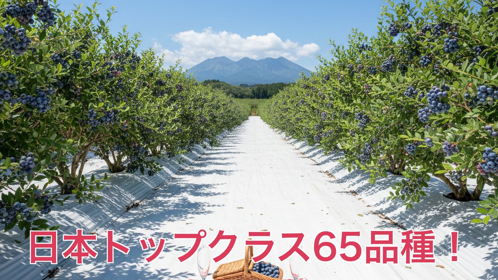
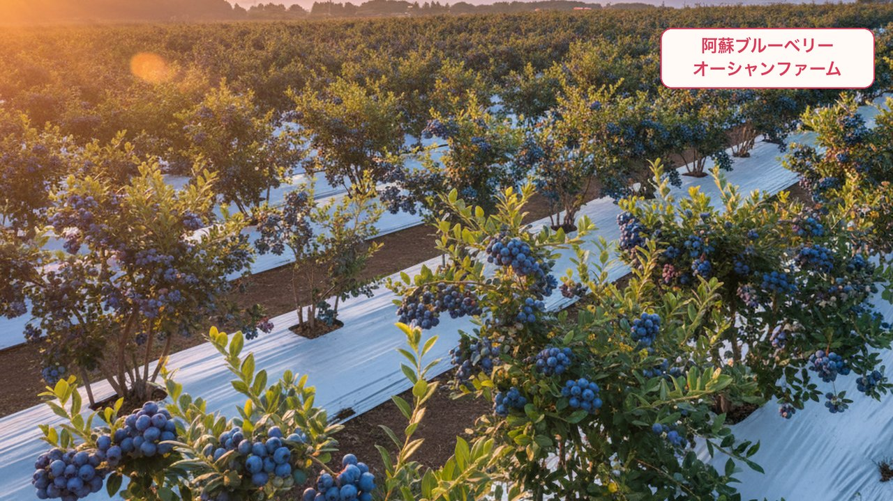

🫐 Lovart指示 — 阿蘇ブルーベリー 写真シーン全集（11シーン）
イラスト系（駅+歩く女性／ロゴカード／吹き出し）以外の実写風AIシーンを一気に揃えるための指示集。
各シーンの「📷 画像生成プロンプト」をLovartのチャットに貼り付け→画像生成→続けて「🎬 動画化プロンプト」を貼り付け→Seedanceで5秒動画化。
Lovart Canvas： canvas?projectId=722fe968...
使い方：各「コピー」ボタンを押す → Lovartチャットに貼り付け → Enter
使い方：各「コピー」ボタンを押す → Lovartチャットに貼り付け → Enter
毎回末尾に追加すると一貫性UP（共通NEGATIVE）：
NEGATIVE: anime, illustration, cartoon, 3D render, airbrushed look, text, watermark, low quality, blurry.
Style: photorealistic, cinematic, shot on Sony A7 + 50mm lens, soft natural daylight, shallow depth of field. 16:9 aspect ratio.
📷 写真A — S01右側／S04／S05 ブルーベリー丸フレーム用
写真A参考動画の「右側CD型」位置／使い回し3シーン

📷 画像生成プロンプト
Macro photograph of multiple ripe blueberries hanging from a blueberry bush branch, deep blue-purple color with visible natural bloom on the skin, fresh green leaves and unripe pink-green berries mixed among them. Soft warm morning backlight creating a delicate glow. Very shallow depth of field with soft creamy out-of-focus background dominated by warm pink-cream tones. Composed so the berries occupy the right two-thirds of the frame, with soft negative space on the left. 16:9 photorealistic cinematic Japanese food/travel commercial style.
🎬 動画化プロンプト（画像選択して送信）
@Seedance 2.0 で5秒動画化。微風で枝先と葉が左右にゆっくり揺れる、ブルーベリー粒は静止、背景の光がふんわり明滅。カメラは固定。16:9。
📷 写真B — S06 屋外農園 一点透視俯瞰（核心USP）
写真B日本トップクラス65品種の代表カット

📷 画像生成プロンプト
One-point perspective shot looking straight down the central walkway of an OUTDOOR blueberry orchard (NOT a greenhouse, NOT covered, completely open-air). Tidy parallel rows of mature blueberry bushes about 1.5m tall on both sides, heavily laden with deep blue-purple ripe berries and fresh green leaves, receding to a vanishing point in the distance. White ground sheets cover the wide central walkway between the rows. Above is a completely open blue sky with a few soft white cumulus clouds — NO netting, NO plastic sheeting, NO overhead structures whatsoever. Bright fresh natural daylight. In the foreground center of the walkway: a small wicker picnic basket overflowing with fresh blueberries on a red-and-white gingham cloth, with two clear champagne glasses on either side. Far in the background: the iconic silhouette of Mount Aso volcanic mountain range, rolling green hills surrounding the orchard. Leave clear empty space at the bottom-center for text overlay. 16:9 photorealistic Japanese tourism commercial.
🎬 動画化プロンプト
@Seedance 2.0 で5秒動画化。カメラが奥にゆっくりドリーイン（5%程度）、両側のブルーベリーの葉が微風で揺れる、雲がゆっくり流れる。バスケットは静止。16:9。
📷 写真C — S07 摘み取り手元クローズアップ
写真C「ラクラク／カンタン」摘み取りの瞬間

📷 画像生成プロンプト
Extreme macro close-up of a young Japanese woman's natural-skin hand reaching up gently to pick a single perfectly ripe blueberry from the bush. Soft natural unmanicured nails. The deep blue-purple berry between her thumb and forefinger is in razor-sharp focus, surrounded by other ripe berries and green leaves softly out of focus. Soft warm backlight creating a delicate glow around the berry skin's natural bloom. Shallow depth of field, cream-pink soft blurred background. DO NOT show the woman's face. Leave clear empty space in the upper-left corner for a pop-bubble overlay, and bottom-center clear for a horizontal tagline overlay. 16:9 photorealistic.
🎬 動画化プロンプト
@Seedance 2.0 で5秒動画化。手がブルーベリーをそっと摘み取る瞬間をスローモーション、最後にわずかに引いた指先で粒が回転。カメラはほぼ固定。16:9。
📷 写真D — S08 屋外農園 ゴールデンアワー（魅せ）
写真DBGMで聞かせる無人の魅せ間

📷 画像生成プロンプト
Cinematic side angle elevated shot of a beautiful OUTDOOR blueberry orchard in Aso highland at golden hour. Completely open-air — NO greenhouse, NO netting, NO overhead structures, just clear evening sky. Multiple parallel rows of mature blueberry bushes heavy with deep blue-purple ripe berries. Soft warm golden backlight rim-lighting the leaves and berries, creating dreamy bokeh in the background. Mount Aso volcanic mountain silhouette in the background under a soft pastel pink-orange sunset sky. White ground sheet pathways between rows. No people in frame. Highly photogenic, peaceful, like a high-end resort travel commercial. 16:9 photorealistic.
🎬 動画化プロンプト
@Seedance 2.0 で5秒動画化。カメラがゆっくり左から右へパン（10度程度）、夕陽が木々の隙間でキラめく、葉が微風で揺れる。16:9。
📷 写真E — S09 ブルーベリー（円バッジ余白付き）
写真E「ゆっくり過ごせる60分」円バッジ素地
📷 画像生成プロンプト
Macro close-up of fresh ripe blueberries hanging in a cluster on the bush, deep blue-purple with visible bloom, fresh green leaves around them, soft creamy out-of-focus background dominated by warm pink-cream tones. Composed with the berry cluster on the right two-thirds of the frame, leaving the entire LEFT THIRD clean and out-of-focus pink-cream for a large circular badge overlay. 16:9 photorealistic Japanese food/travel commercial.
🎬 動画化プロンプト
@Seedance 2.0 で5秒動画化。微風で葉と枝先がゆっくり揺れる、光のスポットがふんわり動く。カメラ固定。16:9。
📷 写真F — S10 屋外カフェ小屋
写真F「園内にカフェスペース」訴求

📷 画像生成プロンプト
Exterior of a charming small white wooden cafe hut at an outdoor blueberry farm in Aso, country-cute style. Triangular roof, large front opening with a wooden counter, hand-painted decorative blueberry-themed graphics on the front panel (no readable text). A small chalkboard menu sign on the side. Soft natural afternoon daylight, Mount Aso silhouette in soft background, surrounded by green grass and a few blueberry bushes. Leave the right side of frame clear for a cloud-shape text bubble overlay. 16:9 photorealistic.
🎬 動画化プロンプト
@Seedance 2.0 で5秒動画化。雲がゆっくり流れる、木々の葉が微風で揺れる、カメラはわずかに右にパン。16:9。
📷 写真G — S11 ソファ＆ローテーブル
写真G「SNS映えするシートエリア」訴求

📷 画像生成プロンプト
A photogenic outdoor rest area at a blueberry farm in Aso: two natural cream wood-frame rattan sofas with soft cushions facing each other, with a low rustic wooden table between them. On the table: a bottle of sparkling beverage in clear glass, two clear champagne glasses, and a small wicker basket overflowing with fresh ripe blueberries on a checkered cloth. Behind the sofas: rows of outdoor blueberry bushes lit by soft afternoon daylight, Mount Aso silhouette barely visible in the distance. White ground sheet flooring beneath, open blue sky above. No people in frame. Highly instagram-worthy. Leave the upper-left clear for a cloud-shape bubble overlay. 16:9 photorealistic.
🎬 動画化プロンプト
@Seedance 2.0 で5秒動画化。グラス内の炭酸が小さく揺れる、雲がゆっくり流れる、テーブルクロスが微風で揺れる。カメラ固定。16:9。
📷 写真H — S12 ブルーベリースイーツ ディスプレイ
写真H「スイーツも一緒に楽しめる♪」訴求

📷 画像生成プロンプト
Close-up of a charming cafe display showing rows of blueberry sweets: small fresh blueberry muffins with crumb topping, cute cups of vanilla yogurt with fresh blueberries on top, small jars of homemade blueberry jam with cloth-covered lids, slices of blueberry tart on white plates. Photographed through soft natural daylight, color palette dominated by deep blue-purple berries and warm cream tones. Leave the bottom-right clear for a cloud-shape bubble overlay. 16:9 photorealistic food photography.
🎬 動画化プロンプト
@Seedance 2.0 で5秒動画化。カメラが手前から奥へゆっくりドリー、ヨーグルトの上のブルーベリーが転がる、光がふんわり明滅。16:9。
📷 写真I — S13 1粒を手のひらに乗せる手元
写真I「お友達との映えスポットめぐり」訴求

📷 画像生成プロンプト
Close-up of a young Japanese woman's natural hand holding up a single large perfect ripe blueberry with a tiny green stem and leaf still attached, presented vertically toward the camera between thumb and forefinger. Soft pink-cream blurred background of the orchard, soft natural daylight. DO NOT show the woman's face. Leave the upper-right corner clear for a pop-bubble overlay, and lower-right clear for a small character illustration. 16:9 photorealistic.
🎬 動画化プロンプト
@Seedance 2.0 で5秒動画化。手がブルーベリーをカメラに近づけるようにわずかに前進、粒の表面のブルームがキラッと光る。16:9。
📷 写真J — S14 バスケット俯瞰
写真J「お子さんと一緒に」訴求

📷 画像生成プロンプト
Top-down close-up of a charming wicker basket overflowing with abundant freshly picked ripe blueberries, placed on a red-and-white gingham picnic cloth at the blueberry orchard, surrounded by fresh green leaves and a few small wildflowers scattered around. Bright natural daylight, beautiful colors and abundance. Leave the upper-left clear for a pop-bubble overlay, and the lower-left clear for a family character illustration. 16:9 photorealistic food photography.
🎬 動画化プロンプト
@Seedance 2.0 で5秒動画化。カメラがゆっくり上昇しながら俯瞰アングル維持、葉が微風で揺れる。16:9。
📷 写真K — S15 チェア＆テーブル（カップル想定）
写真K「カップルのデートにも！」訴求

📷 画像生成プロンプト
Wide elevated shot of an outdoor rest area inside a blueberry farm in Aso: multiple stylish cream and pink-coral chairs and small round wooden tables arranged in a clean spacious area, white ground sheets flooring, surrounded on both sides by rows of outdoor blueberry bushes (NO greenhouse, NO netting). Soft afternoon natural daylight, open blue sky above, Mount Aso silhouette in the soft background. No people, very photogenic and resort-like. Leave upper-left clear for a pop-bubble overlay, and lower-left clear for a couple character illustration. 16:9 photorealistic.
🎬 動画化プロンプト
@Seedance 2.0 で5秒動画化。雲がゆっくり流れる、椅子周りの葉が微風で揺れる、光のスポットがふんわり動く。カメラ固定 or わずかに右パン。16:9。
✅ 作業フロー
- Lovart Canvas を開く（上部リンク）
- 写真Aから順に、「📷 画像生成プロンプト」をコピペ → Enter
- 画像が出たら、その画像を選択した状態で「🎬 動画化プロンプト」をコピペ → Enter
- 5秒動画ができたらダウンロード → Premiere Pro へ
- 11シーン全部繰り返し
- イラスト系（駅+歩く女性／ロゴカード／雲型吹き出し）は別途、ご自身でLovartで制作
- Premiere Proで全カットを並べ、テロップ・ナレ・BGMを合成